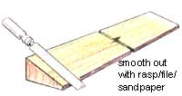

Build A Four-Power Still-Water Canoe
August/September 1997
MOTHER'S WOODSHOP
By Will Shelton
A wooden boat you can build in a day for under $50.
By John Vivian
Co-design and illustrations
By Will Shelton
Ever dream of building a boat? In your own backyard? We thought so. Building a boat is one of the truly great fantasies that most grown boys and girls have indulged in at one time or another. For most of us, it never gets beyond the dream. Or maybe buying a set of plans and being thoroughly intimidated by instructions that begin: "Using the table of offsets, loft the chine...". Offsets? Loft? What's a chine?
Some of us have gone the next step, bought lumber or a kit, and tried to learn to build a boat the same way we taught ourselves to garden and build our own houses-by reading a book or two and then jes' doin' it. But the boat-building dream dies as our initial enthusiasm is slowly drained by frustration. Conventionally designed and built, even a little dingy requires a great deal of time, specialized tools, and specialized wood crafting skills that are impossible to invent as you go.
A landsman's house or furniture building experience is little help beyond providing basic tool skills. A boat contains precious few straight saw cuts. And words like floor, deck and timber, tiller and sheet-the very term house itself, even-have different meanings, shapes, and functions afloat than ashore. And-unlike garden seeds-chine logs, gunwales, and sheer strakes don't come in handy packets with instructions printed on the back.
Hulls
For peak efficiency in moving through its dense, fluid medium, a non-planing "displacement" (so-called for the amount of water it displaces or moves aside) is molded into a hydrodynamic shape that presents the least wetted surface to the water. So, most boat hulls are shaped like the bottom half of a fish and are curved in every dimension-front to back, side to side and top to bottom-all at the same time.
Of course, the wood that goes into a boat begins as a pile of flat, straight boards. Oak timbers must be shaped into a stout but curved backbone or keel that runs front to back along the bottom. Smaller but still massive boards are sawed or steamed into the curved stem up front at the bow. . . into ribs or timbers that curve up from keel to the chine along the waterline to the upper margin of the hull or the sheer ...and into a pointed stem post at the rear of a canoe or a more-or-less flat transom of a powerboat. The hull is decked on top and is planked along the sides with overlapping boards (like clapboards) in the "clinker built" or lap strake style, or with thick planks that butt along their long edges with a beveled space between that is filled with twine-and-putty caulking. Called carvel planking, this is roughly analogous to squared-log building construction.
All these boards, shaped into complex three-dimensional, multiple-compound curves, must be joined so precisely that-once they "soak up" enough water to swell tight-the (appropriately named) vessel will hold water. Or more precisely, will hold water out. And, it must remain watertight and sound in an aquatic environment that is hostile to rottable wood and corrosion prone metals ...through pounding waves, varying temperatures, sun, snow, and hard use. . . for decades.
Shaping boat lumber requires cutting, bending, steaming, planing, chiseling, fitting, and fastening that is more precise than the finest cabinetry. Indeed, straight cut cabinetmaking is a secondary skill in a boatyard-an afterthought to finish off fancy yacht interiors.
...But the Dream Is Still Possible
Commercial wooden-boat building is so skilled-labor intensive and expensive that it's restricted to owner-built craft and a decreasing number of luxury yachts-and increasingly, to restoration of approximately 50-year-old classics: Dodge, Chris-Craft, and Gar Wood varnished mahogany speedboats; Herreshoff, Scheel and Alden sailboats; Elco, Owens, and Trojan motor cruisers.
Most of this restoration work is being done or underwritten by handy semi-retirees and hobbyists with the leisure time and money to take wooden-boat building courses or spend the many years and many more dollars an amateur needs to accomplish or hire out the work.
For those of us seeking to get out on the water quickly and cheaply, however, three technological developments have brought wood-boat construction to everyone. They are [1.] thin, strong, long life plywood, artificial fabrics, and composite building materials (which reduce the need for laborious forming and fitting of most wooden members); [2.] Two-part resin adhesives and finishes (which reduce the need for finely fitted, leak-proof joints, for hundreds or thousands of corrosion-resistant fasteners, and for continual refinishing and preservative-treatment of wood) and; [3.] modern multimedia electronics.
Plywood is made of thin sheets or veneers of wood shaved from logs and bonded with waterproof glue in multiple layers with the grain heading in alternate directions so the sheets are stronger and more stable than boards several times their thickness. All but the outer layer of on view plywood sheets can be made from quick-growing, low-quality lumber so both environmental and money costs are low. A small boat that once required 1" thick or larger lumber fastened with hundreds of rustproof fasteners can now be epoxy'd together from 1/4" thick ply and the joints bonded and sealed for all eternity with fiberglass tape and resins. If the entire hull is covered (or "saturated") with resin and/or a resin/woven-fabric composite, the plywood can be even thinner.
Early fiberglass-reinforced plastic boats and fiberglass coverings for older wooden hulls were bonded with polyurethane resins that degrade from UV radiation of the sun. Over time, they absorb water that forms blisters, and can pull the plastic away from a wooden hull or de-laminate fiberglass fabric of fiber mat embedded in it.
You can save money by building with poly resins-then coat with epoxy resin to seal it against water infiltration. Another option is to build boats entirely from epoxies or epoxy-bonded composites that will adhere to anything (other than the polyethylene and polypropylene used to make containers, packaging film, and a few fabrics).
To add strength, any thin but tough sheet goods, cloth, or loose fiber mat can be encapsulated in it. Fiberglass is widely used. Dynel is a good fabric choice, especially for decks and cabin tops. Organic minded boating experimenters are using lightweight, stronger-than-steel (natural) silk as well as rayon that's made from cellulose derived from wood chips.
But a better reinforcement than manufactured board or any cloth is plywood. Its relative rigidity and lateral strength, bend ability, mold-ability, and large size permit hull, deck, and cabin construction without the molds needed to lay up a hull from floppy fabric, or the wooden frames and forms and joining skills needed to build a plank-on frame hull. Seams can be closed, and bulkheads, seats, and other interior members can be bonded permanently with fiberglass tape imbedded in epoxy.
Easy but immensely strong joints can be made by screw-"tacking" or "stitching" panels together with wire or tape ...then mixing wood flour with resins and troweling the putty into joints and smoothing it into smooth fillets. This "tack & glue" or "stitch & glue" construction eliminates the laborious wood joinery that takes such skill and time. Then, if the ply and trim are all "saturated" with an epoxy covering, the structure becomes a monolithic whole-and, if designed well, will behave as if it had been molded all in one piece.
The design and hand skills needed for plywood/resin boat construction are not only less demanding than plank or fabric construction, they are being made available via electronic devices you can employ at home ...through CAD, computer-assisted design of hulls, sails, and more, in seamanship, as well as navigating computer programs, and instruction on CDs, in how-to videos and in (real time) discussion groups and instruction on the Internet. Seamanship, boat handling, and coastal and inshore navigation remain essential, hard-won practical skills, but offshore navigation has been automated by global positioning satellites. A little $200 handheld GPS receiver will instantly pinpoint your location within a few feet anywhere on the globe.
And, most important to traditionalists, plywood/resin composite boats have all the warm beauty of wood grain, plus a forgiving ride that comes only from a hull with the organic flexibility and holistic integrity of wood. Even encapsulated in resins, wood hulls "just feel right" on the water.
Constructing Puddle Duck
Puddle Duck incorporates design elements of the Native American canoe, Louisiana pirouge, Maine dory and Cape Cod sailing catboat. Still, her construction is simplicity itself-a hybrid of old-time wood and super-modern "tack & glue" construction. Requiring only three 15' plus long plywood panels cut and spliced (scarfed is the correct term) from two 4'x8', 1/4." plywood sheets and a few cedar and pine boards, the hull can be drawn out full-size ( lofted ) from the plan, cut and fastened around conventional wooden boat structural members, and bonded with quick-setting epoxy resins and fiberglass tape in as few as six hours. Finishing will take a bit longer-but a single amateur boat builder can arrange a workspace Thursday evening, bring home wood, epoxy, and paint Friday after work, get up early for a day of boat-building on Saturday and be showing a youngster how to fish Sunday afternoon.
Preliminaries
Before even purchasing your materials (see "Materials List" on 163-083-01 ) and assembling tools (see "Tools" on 163-086-01 ), you will need to locate a workspace that is at least 3' larger all around than the boat. If you are building indoors, be sure doors and passageways are adequate for you to remove the boat once it is finished. Adaptable to paddle, oars, sail, or motor power, PuddleDuck is a flexible little craft, but she won't bend around corners.
Lofting & Cutting Hull Panels
Lay out the ply on a flat surface with the best-finished sides facing up and sheets laid short-edge-to short-edge. With tape or tack nailed boards, secure the joint between sheets temporarily but securely; draw several pencil lines across the seam to make precise rejoining easy.
With a true straightedge or snapped chalk line, mark a line down the center of the 16' dimension of the joined sheets. This will be the centerline of the bottom of the boat.
Sides
Along one long edge of the short-edge-butted ply, use measurements from the flat plan to mark out the "offsets"-the height of hull sides above the chine (bottom edge) from bow to stern at each station.
Set your long fairing batten on edge so it describes a fair curve that touches each of the points you've marked. If need be, set temporary drywall screws into the ply to hold the batten in place.
Sight along the batten to assure the curve is even-without dips or bumps. Then, draw the sheer-the fair-curve line describing the upper edge, or sheer, of the hull.
Set ply on wood strips so the saw won't cut into the floor. A scant 1/8" inch outside of the line, cut out the first side of the boat from the two adjoining sheets of ply; flip them over lengthwise (so upper sides are facing down). Slide them across the sheet so their bottoms line up with the other long edge of the re-butted sheets of plywood. Use hull sides already cut as templates to mark and cut out other side. Set aside.
Bottom
Re-butt the ply sheets and draw offsets from the centerline (as indicated on the plan) for each half of the bottom. Set temporary screws as needed to describe the curved edges of the bottom panel. Use the fairing batten to mark even curves describing both sides of the hull bottom. Be sure curves are equidistant from the centerline all along the bottom. Cut out the bottom panels.
Scarf Panels Together
To join the halves of the sides and bottom, you must scarf them together, making a sound, watertight joint that is as strong as the plywood itself. There are two ways:
[ 1.] True scarf joint. Here, you plane and sand perfect, long, wedge shapes into the edges of sheets and epoxy and tape them together on what will be the inside and outsides of the boat, then fill and sand the joint smooth so they won't show when painted.
[2.] Butt-Block, where you join the raw edges under a thin, wood butt strip running the width of the joint, and then epoxy and tape both sides.
The Scarfing Rule
A scarf-wedge should measure eight to 12 units of horizontal run for each unit of height. With 1/4" plywood 8:1 is adequate, so you need to make a 2" deep scarf wedge running the length of both meeting edges. You can try to plane them individually, but this takes practice. Easier (and acceptable for PuddleDuck because you can fill mistakes with epoxy) is to stack the panels and cut them down all at once. (See illustration.)
Place the two halves of the bottom and the halves of each side together with good sides of the ply facing. Put one set of side panels on top of the other.
Align the two piles along the margin of a wooden surface you can drill into (an expendable-but unwarped-sheet of plywood is best). Stack so the edge of the bottom panel is even with the margin of the support below. Make back-slanting piles-so succeeding boards stacked above are set two inches back from the edge of the board below. You will end up with two stacks: one stack of four side half-panels an 1" high and with 8" to be planed down, and another stack of two bottom panels a 1/2" high with 4" to be planed.
Temporarily screw panels together and to the wood surface below. Draw a line 2" behind and parallel to the leading edge of the top panel in each stack. Draw lines down both side-faces of the stack from that line forward to the front-bottom of the stack. The wedge below is your scarf, the reverse wedge above is to be removed.
Now, with a block plane taking very shallow bites, plane off as much wood as you can. The plywood will reveal a series of color bands as you plane down; keep them evenly spaced and of equal width all along will assure accuracy. Finish with sandpaper stretched and stapled over a foot-long 2x4. Sand until you have an even wedge all along. Be especially careful not to chip the narrow edge of the wedge out at the lip of the support.
Join Halves of Sides and Bottom
To join, flip one half of each pair along the scarf line, align on a drillable surface with two sheets of common kitchen wax paper under the joints. Be sure the centerline of bottom panels is straight and that the bottom of both halves of sides make a straight line.
Mix epoxy according to container directions. (For small jobs like this, you can use quick-setting resin that hardens in seven minutes.) Fill joint with epoxy, cover with wax paper, place a 6" wide strip of scrap over the joint and press with concrete blocks or screw through scrap and boat side panels to base every 3" along both sides of the joint.
Butt-Board Joint
Here, you don't take time to bevel edges, but butt them together and epoxy with a strip of ply over the joint to serve as a reinforcement.
Set halves together so bottom edges of each pair of side panels is straight, and bottom halves are arranged so the center line is straight. Place epoxy in the joint and press together so halves are perfectly aligned and the wedges mated to re-form a perfect 1/4" thickness all along. Cut a bandage-a 6" wide strip of scrap 1/4" ply (or-better-apiece of 1/8" or even thinner ply if you have it). Cover bandage liberally with epoxy, press onto joint, and weight or screw-clamp as described above. When cured, remove screws and tape each edge of the bandage-joint. (Taping is described below.)
Make Stem and Sternpost
The stem is the long wedge shaped piece of wood that joins front ends of the two hull panels at the bow. The sternpost is the equivalent at the back for this canoesterned craft. (If you plan to mount an outboard motor on your PuddleDuck, you will want a square transom at the rear. But, finish off the boat as a doubleender first to get alignment of sides and bottom correct. You needn't add the end cap to the stern.)
End members are sawn from 24"-plus lengths of ordinary 2x4. (See the illustrations.) Make the angled sides perfectly flat and even all along. But do not sand smooth. Leave the surfaces rough to provide a good-adhering base for the epoxy.
Fabricate Built-Up Center Frame
As illustrated, make the frame from a sandwich of wood stock and plywood cutouts. Cut the notches at each side of the bottom of the frame to snugly hold your strip-stock (which will form chines).
To assemble, apply epoxy liberally around rim of one plywood cutout. Fasten to wood strips with screws through ply and into wood. Be sure outer edges remain aligned (epoxy is sneakily slippery under clamp pressure). When first side is set, remove screws and repeat to attach other ply cutout to other side of frame boards. With plane and a long sanding block, trim all four edges to be straight and square across. Clamp frame securely to your center sawhorse. Use the spirit level to be sure the frame sides are parallel and that the top is level. Set the other sawhorses about 8' to each side of the first horse (see sequence of illustrations on page 86, which details assembly steps).
Fasten stem and stern post to side panels.
Epoxy stem and sternpost to one side (or stem to one side panel and the sternpost to the other). Align front of post with cutting line of the bow drawn on ply. Leave several inches of 2-by scrap above and below side panel.
Attach Sides to Frame
Set sides on central sawhorse. Arrange other two horses at each end so they support sides so that bottoms are level. Adjust so that the central frame meets sides at the center of each side panel. Using your square, align the long "H" made by the two sides and the built-up frame so that frame is perfectly perpendicular to both side panels.
Using slow (20-minute) set epoxy, and temporary screws through sides into frame, fasten frame to sides. Adjust so bottom of cutout line on frame panels is even with upper surface of frame. Let set up good.
Close Ends
Using your batten, define the centerline of the boat (perfectly perpendicular to frame) and mark on end sawhorses. Test close ends over the centerline, tacking side panels to stem and stern posts. Place bottom panel loosely on sides and adjust side panels on horses till the bottom fits perfectly. Use clamps or glued-on blocks to make sure sides stay put on horses. (Weight horses if they want to slip.)
Remove the bottom sheet and epoxy ends of sides to stem and sternpost.
Attach Chines
Set your strip-stock into notches in frame, cutting notches to size if need be so that chine logs rest level with frame bottom and cutout lines on side panels. Tack in place. Bend chines to fit along cutout lines of sides, whittling ends as needed to fit snugly against the inboard faces of the end posts. Using slow-set epoxy, tackscrew through ply into chine ...always keeping chine even with cutout lines.
Attach End Caps
Using a sanding block, sand front and rear edges of side panels even with end posts. Epoxy on end caps.
Sand Chines Flat
Trim projecting lower ends of stem and stern post even with side panels. With your plane and a yard-long sanding block that reaches across the bottom, sand edges of both side panels and the chine log affixed to their insides till the surfaces are flat, level from side to side, and the flat surfaces fairly curved so that bottom will have a fiat, firm attachment.
Attach Bottom
Use your thickest epoxy and have handy a good supply of disposable miniscrapers to collect or spread out resin that drips down from the long seam between bottom and chine. Good to use are 1 "x2" rectangles of light non-corrugated cardboard (such as those packed inside new shirts). Cut a lot of them and have an ample-sized, handily placed container to toss them in so they don't get on the floor and stick to your shoes. (Or you can stick on strips of masking tape and sheets of newspaper to catch drips.) Set bottom atop sides so that it covers the entire perimeter with a bit of overlap all around. Check and adjust that all is fair, evenly sheer, and properly aligned. Remove bottom.
Apply a liberal coat of slow-set epoxy to up-facing surface all around side panels and chine logs and across the bottom of the center frame. Using a helper here if nowhere else, lay on bottom panel, align and tack-screw at midpoint of frame. Then, beginning in the center, set tack- screws through bottom into chines of both sides. Alternate tack-screwing from side to side and front to back.
From time to time, duck under the boat and spread out or collect drips. Blobs are hard to remove once set. Wear a knitted cap to keep the stuff out of your hair. (A helper is nice to have at this point as well.)
Trim Bottom
When epoxy is set, use plane, wood rasp, and sanding blocks (or a router if you have one) to trim the outer rim of the bottom panel even with angle of sides.
Taping
Coat insides and outsides of all joints with slow-set epoxy, embed in it a length of fiberglass tape, then immediately cover tape with more epoxy. Add more coats till smooth. This applies to insides and outsides of bows and sterns, to seam where side and bottom panels join, down inner and outer seam between bottom and sides, to seams of proper scarf joints, to both sides of a butt-board scarf and all around the central frame.
Fiberglass tape is stiff and does not want to bend. So cut and fit all tape lengths dry-before applying epoxy. You can cut darts-small notches or slits-to persuade it to bend. It will stretch to a degree as well. You may find that creasing a length of tape will help fit it into or over a sharp angle.
Plan to encapsulate all your tape in epoxy and paint over it-so it won't show. Then you can work with small lengths and not worry about having piecework on display. Overlap joints if piecing tape.
When setting tape into epoxy, try not to go over it more than once or twice with the scraper. You can pull and stretch it, which can make edges curl.
Heating the tape with a torch can make it flexible, but use care. You want to warm, not melt it.
SOURCE LIST
Publications:
Wooden Boat Magazine, P.O. Box 78, Brooklin, ME 04616. $27.00 for six issues/year. (800) 877-5284. Essential reading for any would-be boat builder. The WoodenBoat Store (800) 273-SHIP (7447) sells most of the books mentioned in this article as well as other highquality nautical items.
Messing About In Boats, 29 Burley St. Wenham, MA 01984-1943. $24 for 24 issues (that's right-twice a month) 40page magazines of reader-written articles on small boats of all kinds. Call (508) 774-0906 from 8 a.m. to 5 p.m. and ask for Bob Hicks.
Building The Six-Hour Canoe , Boat design by Mike O'Brien, text by Richard Butz, illustrations by John Montague and plans by William Bartoo; Tiller Publishing, P.O. Box 477, St. Michaels, MD 21663 or call (410) 745-3750. Detailed plans and step-by-step method used by hundreds of amateurs.
Building Sweet Dream , Marc Pettingill; Tiller Publishing, (see above address) 1996. How to build a more elaborate stitch-and-glue paddleboat.
Sailing Around the World , Capt. Joshua Slocum; Dover Publications, New York, 1956 (re-publication of the 1900 original). The ultimate fantasy-realization by the crusty New Englander who did it first back in the 1880s.
Voyaging On A Small Income , Annie Hill; Tiller Publishing, (see address above) 1993. A British couple built a live-aboard sailboat for under £11,000 (about $15,000 U.S.) and sailed it around the world on an income of only £1,300 a year ($2,000 U.S.). Read and dream.
Internet:
http://www.amazon.com will connect you with the largest online bookstore in cyberspace. The site offers a 10 percent discount and lists just about every book written in the last generation on kayaking, sailing, and boat building.
http://www.barnesandnoble.com has recently put the nation's largest book retailer in cyberspace.
Kits and Plans
For the easiest-building boats we've ever come across, write Uncle John's Easy-Build Kit, 5229 Choupique Road Sulphur, LA 70663 for the current price for his "Classic Cajun Pirogue" kit. For less than $50, he will send you plans for a still-water craft you can build in 12' to 16' versions. Also included: rabbeted stem and stern post and precut parts for three frames from weather-resistant cypress.
Plans for Piragua, a 14' x 33" (wider than most) paddleboat from Jim Michalak, 118 E. Randle, Lebanon, IL 62254 or call (618) 537-2167.
Plans for a 16' pirogue from John McCallum, Applegate Boatworks, 25380 Fleck Road, Venetak, OR 97487 or call (541) 935-2370.
Plans and panel kits for a lovely roundhulled canoe: "Sunset" from Louis Moore Stillwater Boats (a new concept in boat building) 16700 Norwood Road, Sandy Spring, MD 20860 or call (301) 774-5737.
Plans for a 11' stitch-and-glue boat made like a paper cut-out and weighing 25 pounds. Swamp Yankee Boats: Robert W. Sparks, 36 Soundview Heights, Branford, CT 06405 or call (203) 488-5932.
Plans for skin-on frame sea kayaks, wooden rowing, sailing, and outboard boats, bow-roof sheds (for boat shelter or greenhouse), boat-building supplies and materials. Catalog $5. Stimson Marine, Inc., RR 1 Box 524M, Boothbay, ME 04537. Order line: (800) 373-6313; questions: (207) 633-7252.
Materials
Mail order sources for resins, fiberglass, paint, cordage, and hardware include the following catalog-publishing firms:
Fisheries Supply Co., Seattle, WA: (206) 632-4462
Freeport Marine Supply, Freeport, NY: (516) 379-2610
Hamilton Marine, Inc., Searsport, ME: (207) 548-6302
For information on resins, go to developers of the West System: Gougeon Brothers Inc., P.O. Box 908, Bay City, MI 48707 or call (517) 684-7286. Ask for their free West System Technical Manual and Product Guide.
To try out epoxy and fiberglass, send for System Three's $10 "Trial Kit" and instruction manual "The Epoxy Book" along with a catalog that includes details and prices for a stitch-and-glue canoe kit. Call (800) 333-5514.
Another source for epoxy packages is Chesapeake Light Craft, 1805 George Ave., Annapolis, MD 21401. Order line: (410) 2670137; D.C. area: (301) 8586335; 24 hour fax: (301) 858-6335. Their boat kits are lovely-though more complex than PuddleDuck.
Order sail-making supplies from: Sailrite, 305 W. Van Buren St., P.O. Box 987, Columbia City, IN 46725 or call (800) 348-2769.
Fillets
The best way to strengthen and finish inside joints (under tape or in a tapeless joint that won't be stressed) is to mix wood flour (or fine sawdust) with epoxy and apply it in a thick fillet. Use a wooden tongue depressor to mix the material and ladle it into the angle of the joint. Then smooth it with a plastic spoon-finish smoothing just as the epoxy begins to set.
To "stitch & glue" a joint, drill small holes through butting plywood sheets. Run brass wire through the holes and use pliers to twist-tighten this temporary clamp. Apply a fillet inside the joint, remove wire, and tape outside of the joint.
Turn boat
You can turn the boat when bottom and ends are taped and sides "saturated" if you want to do all the bottom work at once-but be sure to remove fasteners holding frame to center horse.
Block up bow and stern to work on the turned hull at floor level. Or attach blocks to horses to hold it steady at the waist-high work level.
Transom
If you want a square-sterned PuddleDuck, don't tape and epoxy on the sternpost. Decide how much transom width your outboard will need and draw the shape on each side of the boat. It can be as narrow as 6" and accommodate a small electric motor. And, though (for clarity) the illustration shows the entire stern lopped off, you can design a gracefully angled, hour-glass transom that just nips off the sharp edge of the canoe stern.
Working inside, measure, cut, and epoxy on lengths of strip stock to frame the transom. Be sure to fasten an upper frame member before trimming off the side panels to retain hull shape.
Trim off canoe end with a saber saw.
Using plane and sanding block, square boards so ends of side panels and frame members form a flat plane. This needn't be a perfect job of woodworking, as all will be covered and bonded in place with resin. But transom must be square across in all dimensions to look its best.
Transom boards are the one part of a painted boat that should be stained and left natural if at all possible. A single thickness of plywood will do, since most of the transom area is filled with frame boards. Trace pattern on cardboard held against the rear of the boat. Cut out transom with a bit to spare. Tack-screw and epoxy in place. Sand edges even with side and bottom.
Put wood filler in tack-screw holes when they are removed after epoxy is set up. Before finishing the rest of the boat, sand and stain the transom and give it several coats of thin epoxy till it is glassy smooth. Cover the transom with masking tape and paper to protect it while you finish the boat.
For best appearance, tape the transom seams from the inside only. Name the boat and paint in gold-leaf the name on the transom.
Trim Stem, etc.
With a thin saw, trim even stem or stern post scrap that juts beyond the sides. Or, as illustrated, round one or both and drill through to use hole mooring lines.
Tape inside hull/bottom seams, attach seat-holding cleats and accessories to sides and bottom. Saturate inside with resin mix
Make Decks
For cosmetic value and to hide flotation, you should fashion decks fore and aft. A 12" to 18"-long deck at bow of all versions, and at bow and stern of canoes will look fine.
Slapping a plywood deck on top of the bow will make your rub rail look peculiar. Better is to trace out a template to make an inset deck: an arrow tip-shaped piece of Y4" ply that fits down in between the peak made by the stem and side panels. Set a pair of cleats on the inner surface of both side panels at the bow peaks. . . X" down from the top edge and parallel to the gunwale. Epoxy cleats in place, then epoxy deck to cleats. Sand even all around and epoxy smooth.
Flotation
You can make a vertical bulkhead to create a flotation chamber or a watertight compartment under the the deck. Make a cardboard template to shape sections of thin plywood to meet hull sides and un derside of deck. Install vertical cleats on both (in)sides of the hull to support it. Fill the space under the deck with any flotation you have at hand.
Fill the space with an old inner tube. Or, this is a good way to get rid of that noxious solid-styrofoam packaging that every half-fragile product comes in these days. It is nasty stuff to cut with anything but a hot knife or cool soldering iron and leaves little white balls sticking to everything with static electricity. But, cut pieces to fit and glue them in place with (non-expanding) foam insulation. Use the foam to fill all empty spaces and foam-fill out to the bulkhead that will close the compartment. Once hard, the foam can be trimmed, so you can install the bulkhead flush with it. Epoxy the bulkhead in place.
At the rear of a transom-type PuddleDuck, you will be installing an outboard motor, a sculling oar, or rudder. If it won't interfere with these accessories, build in a rear deck/flotation compartment of similar size and construction as the front deck. Only its top shape will differ. To accommodate outboard attachment screws, install the deck 4" down from the gunwales. Or fashion a 4" deep tray at the back of a flush deck (with drain holes out through the transom).
For these and any other through-hull fitting (such as for tiller ropes of a rudder) epoxy in lengths of smooth plastic tubing to serve as thimbles or fairleads to keep rope from chafing. PVC plumbing pipe or the little cream-colored connectors for smaller-diameter pipe are good.
If epoxied carefully, the deck/bulkhead will form a watertight compartment. Leave out the flotation and install a deckplate-a removable air and water-tight hatch you can buy at any marine supply outlet. Then use the compartment to store lines and gear.
Rub Rail, Keel, and Beach Runners
Finally, fit and epoxy strip-stock rub rails around each gunwale edge. Sand outer face and top surface before attaching. As with the bottom, start at the middle and work to the ends, alternating epoxy applications and tack-fasteners from side to side and front to back. Keep your drip catchers handy.
The transom version should have a skeg at the after end of the keel built up from 3" boards or cedar strip-stock. See plan; the keel should be screw-fastened or through bolted to hull, then epoxy-taped in place. For frequent beaching, a pair of wood wear rails from strip-stock should also be installed on the bottom at each side of the keel. Cover keel and beach runners with fiberglass tape and epoxy for longest life.
For the best job, the final layer of keel and a cap on beach runners can be strips of plain wood screwed but not epoxied in place. These boards can be replaced when they wear.
Seat Options
The boat is too small and low-sided for proper thwart-seats. You need to keep your weight down to maintain a low center of gravity and good balance. PuddleDuck is really made for paddlers who can spend long periods sitting cross-legged or on their knees. A square boat cushion is more than adequate as either seat or knee-rest. Best for relaxed sailing or power-boating are old fashioned legless canoe-chairs with woven cane seats and folding backs.
If you are long-legged and find the central frame gets in the way of comfortable seating, you can saw out the cross-member. Reinforce half frames by making and epoxying on four " knees"-lazy "L"-shaped pieces of ply 6" long on each leg-to each side of both bottom-angles of the frame. Keep the sawn-out cross member though and clamp it back in place to retain hull shape while boat is in storage over winter.
Finish Options
For longest life, coat every square inch with epoxy. To protect the resin from the sun's UV rays, paint inside and out. (See "Materials List" on 163-083-01 for more information.)
End Note
Pick your choice(s) in power from the companion article on page 64. Get a Coast Guard approved vest-type life preserver (a PFD or Personal Flotation Device) to fit every boater, and take your new craft to the nearest protected water for a test run. She'll float in 6" of water, bounce off logs and mossy rocks with no damage, and will hold 250 pounds easily. But don't overload her or try navigating rough water. With flotation bow and stern she won't sink, but her low sides and minimal freeboard will let her ship water in any kind of sea, or if you heel over too far on a sailing tack or "catch a crab" by letting the water grab a paddle or oar left in the water too long. (See the " SOURCE LIST " for places to get a good book on sailing or kayaking.)
Tell us how your water-borne dream is coming. Write to: MOTHER'S BoatWorks, P.O. Box 1701, Rutland, VT 05701.
|
Methods of joining plywood panels |
|
|
 |
|
|
|
|
 |
 |
|
|
|
|
|
|
|
|
|
|
|
|
|
|
|
|